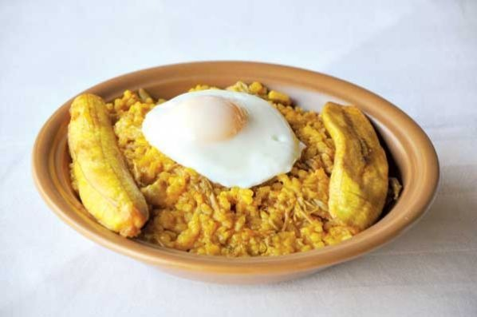
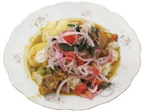

-
- Pique macho -

Descripcion
El pique macho es un plato típico boliviano y es muy popular en la ciudad de Cochabamba.Su origen se remonta al año 1974, al Restaurante Miraflores, de los esposos Honorato Quiñones Andia y Evangelina Rojas Vargas. El“Pique Macho” fue una creación colectiva de los comensales que frecuentamos el Restaurante Miraflores.
Ingredientes
1 Kilo de carne blanda (lomo, cuadril, jiba)
½ Kilo de salchichas
10 Papas medianas
-
4 Cebollas grandes ( mucho mejor la cebolla blanca)
2 Tomates medianos (mucho mejor redondos)
3 Locotos a gusto
Aceite
Pimienta molida
Comino molido
Ajo molido
Sal a gusto
Preparacion
-
Cortar la carne en pedazos pequeños y condimentar con sal, el ajo, la pimienta y el comino a gusto.
-
Picar el locoto en cuadraditos pequeños y saltear en la sartén con un poco de aceite caliente, con la cebolla picada en pluma, el tomate en cuadraditos y una pizca de sal.
-
Aparte, freír la carne tapándole para obtener una carne jugosa.
-
Cortar las papas en tiras y freírlas en aceite.
-
Mezclar todo y agregar las salchichas picadas en rodajas y las papas fritas.
-
Servir adornando con trozos de locoto crudo picado en tiras largas.
-
para que sea un pique criollo puede agregar lonjas de queso y huevo duros en círculos.
-
- Majadito -
Descripcion
Aunque muchos suelen llamarlo normalmente Majao, este plato es muy parecido a lo que es la paella española, sin embargo no lleva ni mariscos, ni es seco, dado que sale un poco pocho, y no es porque no esté listo, sino que el plato en si es así. Sus ingredientes son: Carne de res, pimentón, arroz, un huevo frito puesto encima, acompañado de plátano frito.
Ingredientes
5 tazas agua
1/8 de kg charque
1 taza arroz grano grueso
1/2 taza cebolla picada fina (sin lavar)
1/2 taza tomate pelado y picado fino
-
1/4 cucharllla sal (si el charque no es muy salado)
1/2 taza aceite
-
4 semillas de urucú (achiote) remojadas en 1/2 taza de agua
1/2 taza agua o caldo
1 cdts sal a al gusto
Preparacion
-
Poner en una olla las cinco tazas de agua, cuando esté hirviendo agregar el charque y dejar cocer hasta que esté suave, sacar, martajar y desmenuzar.
-
Al agua donde hirvió el charque añadir el arroz y la sal, dejar cocer a fuego moderado por veinticinco minutos más o menos hasta que esté muy bien cocido, pero no seco.
-
Poner en una cacerola pequeña a fuego fuerte la cuarta taza de aceite, agregar el charque desmenuzado, freír hasta que esté dorado y sacar del fuego.
-
Poner la cuarta taza de aceite restante a fuego fuerte en una cacerola, agregar la cebolla, dejar dorar un rato, añadir el tomate.
-
Luego agregar el color del urucú colado, agua o caldo y la sal. Dejar cocer unos cinco minutos, poner el charque frito, mezclar y agregar a la olla del arroz, mezclar todo, no debe quedar seco.
-
En caso de que se seque puede añadir un poco de agua hirviendo a gusto.
-
Servir caliente, con el huevo frito encima, el medio plátano frito y la yuca también frita.
-
- Sajta de pollo -
Descripcion
La Sajta es un plato típico de la región occidental de Bolivia, particularmente, de la ciudad de La Paz. Consumido principalmente en las festividades de todos santos, y el carnaval.Es un plato preparado en gran parte de Bolivia sin embargo es bien sabido que la sajta de pollo paceña es la que tiene el sabor original.
Ingredientes
1 Pollo entero
1 ½ kg tunta grande
6 papas grandes peladas
3 Cebollas picadas
1 Platillo de arvejas
½ Taza de ají amarillo molido
3 cucharas de apio picado fino
1 Cubito magy
3 cucharas de perejil picado fino
1 tomate
3 Cucharones de caldo pollo
Ajo
Sal
-
6 vainas de ají amarillo, despepitadas y lavadas
2 cucharillas de pimienta entera
2 cucharillas de comino entero
4 dientes de ajo
Preparacion
-
Comenzamos despresando el pollo, eliminando sus vísceras y lavar bien Reservar.
-
En batán con poca agua, moler la pimienta, el comino y los ajos enteros junto con el ají amarillo, hasta que tenga una consistencia de puré. (si no tiene batán de piedra puede realizarlo en una licuadora, debe mezclar con los condimentos).
-
Picar tres cebollas finamente y sofreír en una olla con aceite, hasta que esté transparente
-
Añadir las arvejas, el apio, una cuchara de perejil, sal al gusto y remover unos minutos; luego agregar los condimentos recién molidos.
-
Incorporar a esta preparación las presas de pollo, el agua hervida suficiente que cubra la carne y dejar cocer.
-
Agregar sal si fuera necesario. Dos horas antes remojar la tunta, pelar y cortar un poco por la mitad, luego rellenar con una tajada de queso en medio y colocar sobre una coladera para hacer cocer a vapor en olla con agua caliente.
-
Las papas peladas, hacer cocer en bastante agua con sal.
-
En una fuente preparar la ensalada, previamente lavados los ingredientes Picar el resto de la cebolla y el tomate en corte pluma. Sazonar con sal y aceite.
-
Servir el pollo rociado con su jugo, adornar con la ensalada, encima con el perejil que sobro; acompañar con papa y tunta.